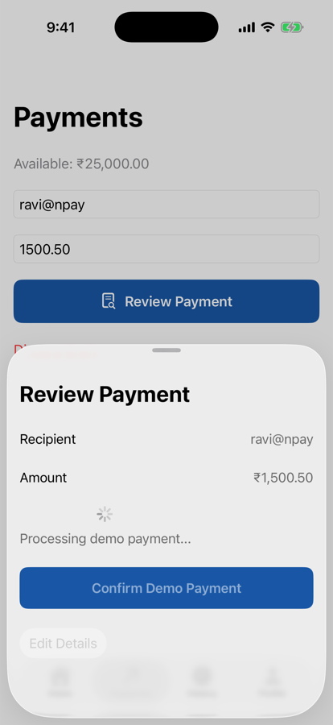
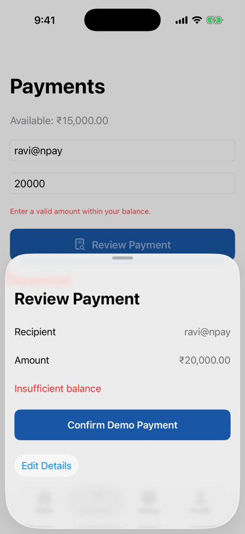

Unit 04 · Lesson 4.7
Loading, success, failure, and “we don’t know”: one enum instead of four Booleans.
Lesson 4.7 · Outcomes
Replace Boolean flags with an enum state
Define legal transitions and block duplicates
Explain what await does, and doesn’t
Render every state with a switch
Tell cancellation, failure and unknown apart
Tie each result to its own submission
Lesson 4.7 · Where we are
Unit 04 · Application Architecture & MVVM
Part 1
Make contradictions unrepresentable
Part 1 · Booleans, then an enum (sections 1–3)
var isLoading = false var isSuccess = false var hasError = false var isProcessing = false // One of 16 combinations: isLoading = true isSuccess = true hasError = true
enum PaymentUIState {
case idle
case validating
case submitting
case success(PaymentRecord)
case failure(String)
}Part 2
States and the transitions between them
Part 2 · The payment lifecycle and its transitions (sections 4–6)
| Current | Event | Next |
|---|---|---|
| Idle | Confirm payment | Validating |
| Validating | Passes / fails | Submitting / Failure |
| Submitting | Succeeds / fails | Success / Failure |
| Failure | Retry or edit | Idle / Validating |
| Success | New payment | Idle |
Part 2 · Prevent duplicate submission (section 7)
extension PaymentUIState {
var isBusy: Bool {
switch self {
case .validating, .submitting:
true
default:
false
}
}
}
guard !state.isBusy else { return } // ViewModel
.disabled(viewModel.state.isBusy) // SwiftUIone call: success
the other: failure("A payment is already processing")
payments recorded: 1
Part 3
One property for the lifecycle
Part 3 · PaymentViewModel with explicit UI state (section 8)
private(set) var state: PaymentUIState = .idle
func submit(_ command: SendPaymentCommand) async {
guard !state.isBusy else { return }
state = .validating
// Command value objects were validated at creation.
state = .submitting
do {
let record = try await sendPayment.execute(command)
recipient = ""; amountText = ""
state = .success(record)
} catch PaymentDomainError.insufficientBalance {
state = .failure("Insufficient balance")
} catch PaymentDomainError.limitExceeded {
state = .failure("Demo payment limit exceeded")
} catch {
state = .failure("Unable to complete payment")
}
}
func reset() {
guard !state.isBusy else { return }
state = .idle
}private(set): only the ViewModel moves it50 ms in: submitting, isBusy true
states a view observed:
[submitting, success(150050)]
.validating is never seen: same turnPart 3 · async/await and UI state (sections 9–10)
.submittingPart 4
Switch over the state
Part 4 · Render UI from the state; keep the sheet while busy (sections 11–12)
@ViewBuilder
private var statusContent: some View {
switch viewModel.state {
case .idle:
EmptyView()
case .validating:
Text("Validating payment...")
case .submitting:
ProgressView("Processing demo payment...")
case .success:
Label("Payment recorded",
systemImage: "checkmark.circle.fill")
.foregroundStyle(.green)
case .failure(let message):
Text(message)
.foregroundStyle(.red)
case .statusUnknown:
ContentUnavailableView(/* section 17 */)
}
}
Submitting (3 s latency)
Processing demo payment...
Confirm disabled
swipe-to-dismiss blocked
Edit Details disabled (ours)
Part 4 · Success navigates; failure stays (sections 13–14, 21)
Task {
let result = await viewModel.submit(request.command)
switch result {
case .success(let record):
pendingSuccessID = record.id
review = nil // then onDismiss navigates
case .failure:
break // sheet stays; it shows the error
case .statusUnknown:
break // status check, never a guess
}
}| Simulator | Result |
|---|---|
| ₹1,500.50 | sheet closes; onDismiss → Payment Recorded; ₹23,499.50 |
| ₹20,000; ₹10,000 left during review | sheet stays: “Insufficient balance”; no route; Edit Details keeps the draft |

Failure: the sheet stays
Part 4 · What happens if the payment fails? (section 14)
repository throws AccountRepositoryError.insufficientBalance
use case passes it through
ViewModel: failure("Unable to complete demo payment")
failure("Demo payment limit exceeded")
PaymentDomainError} catch AccountRepositoryError.insufficientBalance {
throw PaymentDomainError.insufficientBalance
}Part 5
Cancelling a task isn’t reversing a payment
Part 5 · Cancellation (section 15)
cancel before the payment is recorded:
result failure("Unable to complete demo payment")
repository: 0 payments, 2500000
cancel after it is recorded, before the reply:
result failure("Unable to complete demo payment")
repository: 1 payment, 2349950
Latency before or after recording stands in for the network.
Part 5 · Model unknown outcomes (sections 16–17)
enum PaymentUIState {
case idle
case validating
case submitting
case success(PaymentRecord)
case failure(String)
case statusUnknown
// isBusy as before
}
case .statusUnknown:
ContentUnavailableView {
Label("Payment status unavailable",
systemImage: "questionmark.circle")
} description: {
Text("Check transaction status before retrying.")
}Part 6
Whose result is this?
Part 6 · Stale asynchronous results (sections 18–19)
private var activeSubmissionID: UUID?
let submissionID = UUID()
activeSubmissionID = submissionID
// ... after the await:
guard activeSubmissionID == submissionID else {
return
}payment A starts; the user starts over 50 ms later; A finishes:
without the check: new flow shows success(150050)
with the check: new flow shows idle
repository: A recorded either way
Part 6 · A safer submission contract (sections 20–21)
enum PaymentSubmissionResult {
case success(PaymentRecord)
case failure(String)
case statusUnknown
}
func submit(_ command: SendPaymentCommand)
async -> PaymentSubmissionResult {
guard !state.isBusy else {
return .failure("A payment is already processing")
}
state = .validating
state = .submitting
do {
let record = try await sendPayment.execute(command)
state = .success(record)
recipient = ""; amountText = ""
return .success(record)
} catch PaymentDomainError.insufficientBalance {
state = .failure("Insufficient balance")
return .failure("Insufficient balance")
} // ... limitExceeded, then a generic failure
}statePart 7
Test the transitions; keep concerns apart
Part 7 · Testing the state machine (section 22)
| Scenario | Expected state |
|---|---|
| Initial ViewModel | idle |
| Submission starts | submitting |
| Repository succeeds | success(record) |
| Repository rejects | failure(message) |
| Unknown remote outcome | statusUnknown |
Correct failure result
Correct UI state
case .failure, any messagePart 7 · Why not one enormous enum? (section 23)
review; route: NPayRouterLesson 4.7 · Recap
One enum, one lifecycle
idle, validating, submitting, success, failure, unknown
Results belong to submissions
return the result; check the active ID
Cancelled ≠ reversed ≠ failed
cancelled after recording: the money moved
Review
Check your understanding · 1 of 11
Why use an enum for payment lifecycle state?
One case at a time; 16 Boolean combinations gone.
Common trap: Adding flags for every new situation.
Check your understanding · 2 of 11
Does await guarantee that code runs on a background thread?
It marks a suspension point; isolation decides where code runs.
Common trap: Equating async with background.
Check your understanding · 3 of 11
Does canceling a Swift task necessarily reverse a payment?
Cancelled after recording: 1 payment, 2349950.
Common trap: Treating cancellation as undo.
Check your understanding · 4 of 11
What does statusUnknown represent?
Check status before retrying.
Common trap: Reporting failure when unsure.
Check your understanding · 5 of 11
Why return PaymentSubmissionResult from submit()?
No reading shared state after the await.
Common trap: Reading mutable state that may have moved on.
Check your understanding · 6 of 11
Should a failed payment navigate to the success screen?
The sheet stayed: “Insufficient balance”, no route.
Common trap: Navigating on tap instead of on result.
Check your understanding · 7 of 11
Does a UI submission guard guarantee server-side idempotency?
isBusy stops a double tap here, not a retry elsewhere.
Common trap: Confusing local guards with the server.
Check your understanding · 8 of 11
Should form focus and navigation paths be forced into PaymentUIState?
Separate concerns, separate owners.
Common trap: One enum for everything.
Check your understanding · 9 of 11
submit sets .validating then .submitting with no await between. Which states can a view observe before the result?
Observed: [submitting, success(150050)].
Common trap: Expecting every assignment to render.
Check your understanding · 10 of 11
The text’s ViewModel on Lesson 4.6’s use case submits ₹500 against ₹100. The failure message is…
The repository’s error wasn’t mapped.
Common trap: Assuming errors translate themselves.
Check your understanding · 11 of 11
From Lesson 4.6: what should the review sheet’s Confirm submit?
The reviewed command paid 150050, not 200000.
Common trap: Re-reading the form.
Lesson 4.7 · Where this goes next
| Lesson | Topic | Builds on today |
|---|---|---|
| 4.8 | Modular project structure | the payment feature’s files, organized |
| 4.9 | Architecture testing | one test per transition, with exact messages |
| Unit 5 | Networking | classifying errors; statusUnknown for real |
| Unit 8 | Concurrency | task lifetime, cancellation, structured concurrency |
Lesson 4.7 · Lab
An honest model of the payment’s progress.
Lesson 4.7 complete
Next: Lesson 4.8 — Modular Project Structure